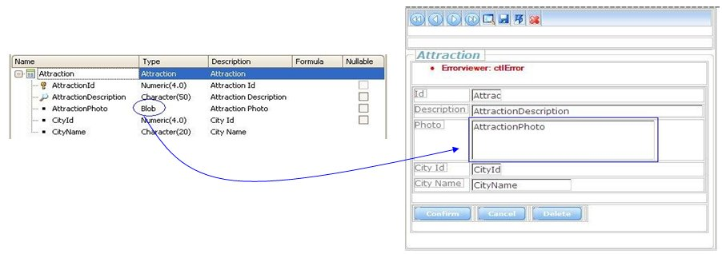
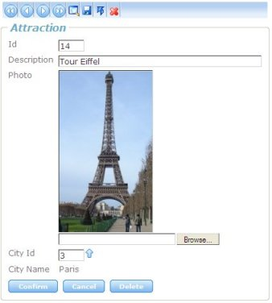
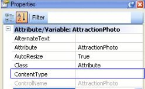
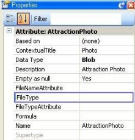
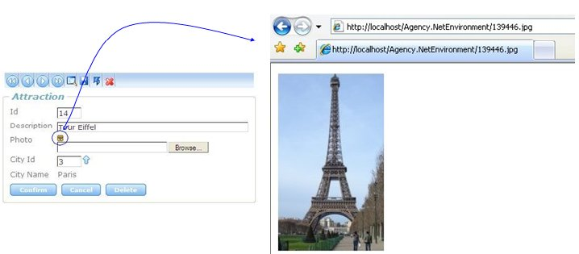
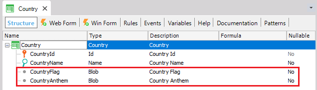
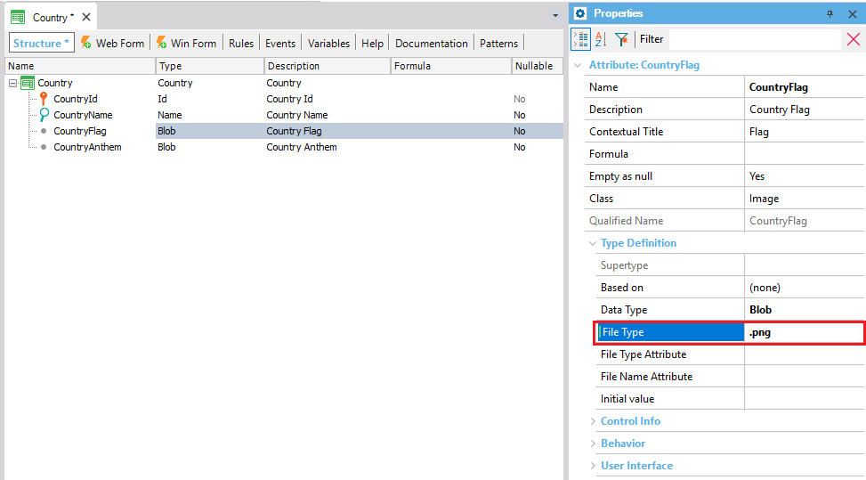
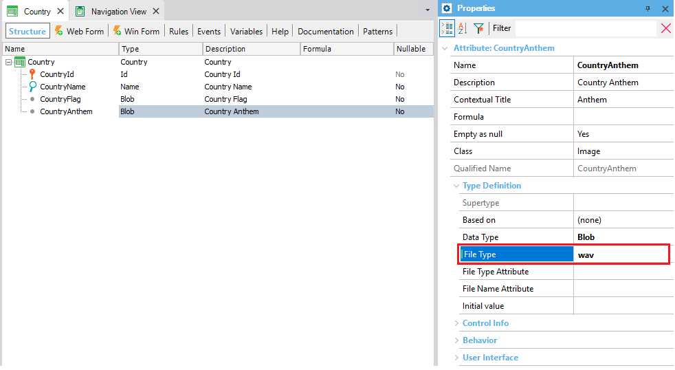
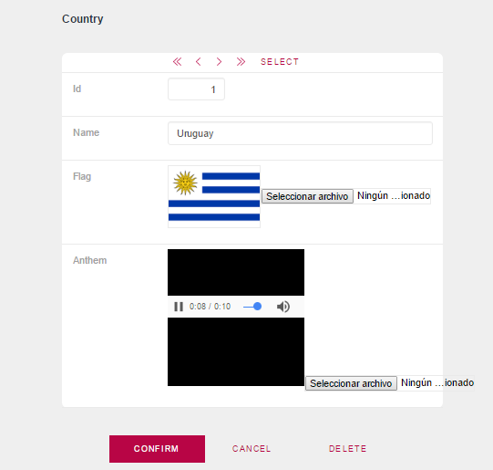

The Blob data type allows you to store images, spreadsheets, videos, audio files, and any other type of documents in the database, taking advantage of the different integrity and control mechanisms provided by the DMBS.
There is a way to save blob fields automatically in the database using a web interface (web transaction). There is also an easy way to display a blob field in the web form: a File Upload control control is generated, and, optionally, an embedded window in which the content (image, video, etc) is shown.
Note: Using BlobFile data type instead of Blob data type, the data can be stored using any external storage. Because of its advantages, it is strongly recommended to use Blobfile instead of Blob.
Summary:
A blob in the web form can be visualized automatically as an image, video, audio, document, etc, depending on the content of the blob field. It can be displayed as a link, to allow the user to click on it and display the blob, or it can be shown embedded in the web form.
To insert or update blob fields in the database, a file selection dialog appears, which enables the end user to browse the file system structure of the client PC (where the Internet browser is running). The process of uploading the file is then automatic. The user chooses a file that will be uploaded to the server and saved in the database.
The file selection dialog is shown by clicking a "browse" button associated to an edit control in which the selected file is loaded. This is known as an "upload control", and it's shown in the following image:

And in runtime you will see:

The file selected is uploaded temporarily to a directory in the web server, and then, on the next POST (when the user confirms the transaction) it is saved in the database.
In some cases, it is necessary to work with different types of files, for example, the same database field contains Word documents, photographs in JPG and GIF format, and video files.
Having the file extension helps in many cases in which the Internet navigator need to know the file format in order to display it, or in cases in which the WebServer prohibits uploading files without extension.
The main goal is to be able to run the application in servers that have a maximum level of security and don't allow uploading files without extension.
Let's look at the attribute properties:
Every time the Blob data type attribute is assigned (either in the user interface or by an assignment command) the value of the FileTypeAttribute is also automatically assigned. That is to say that the FileTypeAttribute is assigned when you upload a blob from a Web Interface (a Web Transaction), a procedure or a Business Component in a batch mode (from a procedure).
The default value is (none), stating that no attribute holds the file type.
Constraints on the FileTypeAttribute:
Note: If the FileTypeAttribute property is assigned with a value, the corresponding attribute assigned to this property cannot be explicitly modified through a web transaction.
As we've already explained the FileType property, let's now look at the FileType runtime property. You can use it to retrieve the file extension of a blob, or change it dinamically by using the following sintax:
&extension = Attblob.FileType
The FileType property returns the actual file extension, when the blob is being uploaded.
For instance, if you have the following rule in a web transaction:
msg('The uploaded file is ' + Attblob.FileName + '.' + Attblob.FileType) if not Attblob.isempty() on aftervalidate;
When uploading the file, Attblob.FileType returns the actual file extension.
When the file is being downloaded, the FileType is obtained from:
1. The FileType property, if it's assigned in the design model.
2. The FileTypeAttribute property of the blob (if it has one).
Otherwise, it returns null.
The FileNameAttribute property identifies an attribute that holds the File Name of a Blob data type attribute. A Blob data type attribute can store files. The attribute stores the file content but not it's original name. You should set this property if you want to keep track of the original file name.
Every time the Blob data type attribute is assigned (either in the user interface or by an assignment command) the value of the FileNameAttribute is also automatically assigned.
The default value is (none), stating that the original file name is lost.
Constraints on the FileNameAttribute:
Note: When downloading the file, it is temporary saved with its original name (which is taken from the FileNameAttribute), plus a random number. So that each file is given a different name, in order to be able to run the application in multiuser and concurrent environments.
Content Types are a means of identifying web pages, images, and multimedia files on the Web and in email messages. They allow web browsers and email clients to display content in a correct and safe way. In the case of blobs, it may be necessary to set their Content Type, especially for certain kind of files, or for certain Internet navigators. Commonly used content types include text/html, image/jpeg, model/vrml, video/quicktime, etc.
It's important to note that GeneXus automatically generates the corresponding Content Type of each blob, based on the extension it has. But there are ways to change this Content Type, if the user wants to.
There are two ways to do this in GeneXus:
ContentType property (design and runtime control property)
 
It indicates the content type that should be associated with the Blob. For example, the content type of .wav documents is generally audio/wav, for an .xml file it's text/xml, etc.
The Content Type depends on the browser, and that's why the GeneXus user is given the possibility of setting it programmatically. However, the corresponding Content Type is actually determined at runtime by the generated program.
That is to say, in most cases you only need to set the File Type properties or nothing at all, if the blob has a FileTypeAttribute associated to it. This is because GeneXus automatically determines the Content Type, from this information.
The ContentType Property should be used when the extension doesn't allow unique identification of the Content Type, or when the GeneXus user wants to set it depending on the end user's browser.
You can query the name of the file by using the FileName property (runtime property). This is a ReadOnly property, which allows you to know the name of the file associated to a blob. When uploading the file, it returns the name of the file which is being uploaded. For instance, if you have the following rule in a web transaction:
msg('The uploaded file is ' + Attblob.FileName + '.' + Attblob.FileType) if not Attblob.isempty() on aftervalidate;
When uploading the file, Attblob.FileName returns the actual file name. On the contrary, when downloading a file (if it is in a webpanel, for instance), the value returned by the property is based on the value stored in the FileNameAttribute exclusively. This is because the blob by itself doesn't store any information other than the binary file. It doesn't store the extension or the name of the file.
Determines the width / height of the blob control in the form.
It indicates the way the blob content is going to be displayed in the form. It's available in design model and at runtime. The possible values are:

If you define a different value than 0 or 1 (only in runtime) in the property, the blob will not be displayed either Inline or Link.
When the display property is set to "Link", by this property you can choose to show the blob content in a separate window.
For example: blobatt.linktarget = '_blank'
When the display property is set to "Inline", and the blob content can't be managed by the Internet browser without providing additional information to it, the Parameters property has to be used to provide the necessary information to the browser.
For example, if you want to display a video in mpg format, in the IE (Internet Explorer), you have to have the following settings:
(This example runs in Windows Media Player)
blobatt.parameters = '<param name="Filename" value="' + pathtourl( blobatt) + '">' +
'<param name="AutoStart" value="True">' +
'<param name="ShowControls" value="True">' +
'<param name="ShowStatusBar" value="True">' +
'<param name="ShowDisplay" value="False">' +
'<param name="AutoRewind" value="True">'
Note: The Internet browsers need to know which application to use to display certain type of files. That is what the ContentType property is for. For example, in the case of IE, when the content is .mpg, the ContentType should not be video/mpg (as it would be by default), but application/x-mplayer2. In these special cases, the ContentType refers to the application which should show the content instead of the real content type of the file.
This environment property is used to set the web server path where files are temporarily saved when retrieved from the database. That is to say, when you Get data, a temporary file is saved in the Blob Local Storage Path. The extension of the saved file depends on the value of the Blob property called File Type.
The Blob Local Storage Path must be accessible from the virtual directory (ie, if the virtual directory is C:\resin-2.0.2\webapps\test an acceptable value for the property would be: C:\resin-2.0.2\webapps\test\resources\rtrepository).
This environment property is used to set the web server path where files are temporarily saved when loaded in the database. That is to say, when a Blob is added or updated, it is temporarily saved in this directory.
The Temporary Media Directory must be accessible from the virtual directory.
Let's see an example in which we use the Blob data type. We create a Country transaction, with attributes CountryId, CountryName, CountryFlag, and CountryAnthem. The latter two are of the blob type, so that we can store the flag of the country, and its national anthem.

We now go to the properties of the blob-type attributes, and in the File Type property, we set png for CountryFlag, and wav for CountryAnthem:
 
Finally, we press F5, and in the Country transaction we insert the country Uruguay, along with its flag and national anthem:

Notes:
I. In general, Internet Explorer doesn't respect the Content Type returned by web servers and uses a variety of strategies to automatically detect the content type of files.
This means that different browsers have different behaviors. For example, when a blob field is displayed as a download (link), and a Content Type is specified, IE determines how to display the blob in the form by using the above strategies. Therefore, the Content Type is only considered as a hint for the browser.
This doesn't happen with Mozilla, which always considers the specified Content Type. Therefore, we recommend reading the corresponding documentation so as to know beforehand what the expected behavior is for the application.
Our tests produced the following results:
1. When the blob is displayed as a link, the Content Type is ignored by IE. It has its own rules for identifying the content type and ignores the one specified by the user. The same happens with Netscape. Consequently, the file will be correctly displayed in the HTML only if the file type can be identified by the browser. To solve this, give the file an extension through the FileType property when saving it temporarily. This problem doesn't exist in Mozilla FireFox.
2. If you set the FileType property, the blob is temporarily saved in the server with an extension. In this case, the web server decides how to display the content through MIME Types, so the specified Content Type is ignored. Blobs that are Word documents, for example, are correctly viewed only if they are displayed as links, and they have an associated extension or "FileType" (the same happens with Excel worksheets).
3. In some cases, when the blob display is Inline and has an associated extension (File Type), IE can't display the content, while Netscape and Mozilla try to download it (for example, it happens with .doc, .xls, .pdf).
4. If the display is Inline and you work with File Type or Content Type, IE, Netscape and Mozilla all consider the specified Content Type, except in the case of Word documents and some other exceptions. Some MIME types, like graphics, can be displayed inside the browser. Others, such as word processing documents, require an external helper application in order for them to be displayed.
The following table shows some Content Types which are assigned automatically, given a File Type (an associated extension).
| FileType | Content-Type | |
| TXT | text/plain | |
| RTX | text/richtext | |
| HTML/HTM | text/html | |
| XML | text/xml | |
| AIF | audio/x-aiff | |
| AU | audio/basic | |
| WAV | audio/wav | |
| BMP | image/bmp | |
| GIF | image/gif | |
| JPE/JPEG/JPG | image/jpeg | |
| JFIF | image/pjpeg | |
| TIF | image/tiff | |
| MPEG | video/mpeg | |
| MOV/QT | video/quicktime | |
| AVI | video/x-msvideo | |
| EXE | application/octet-stream | |
| PS | application/postscript | |
| application/pdf | ||
| TGZ | application/x-compressed | |
| PNG | image/x-png | |
| ZIP | application/x-zip-compressed | |
| GZ | application/x-gzip | |
| DLL | application/x-msdownload | |
II. Changing the Temporary Media Directory and Blob Local Storage Path at runtime
You can change the Temporary Media Directory and the Blob Local Storage Path at runtime for the Java generator by changing the client.cfg. For example:
TMPMEDIA_DIR=C:\Program Files\Apache Software Foundation\Tomcat 5.0\webapps\YIBLOB\TempMedia
CS_BLOB_PATH=C:\Program Files\Apache Software Foundation\Tomcat 5.0\webapps\YIBLOB\media
Note
When the blob's content is restricted to images, video or audio, the use of Image, Video or Audio data types should be considered instead the blob data type.
| Objects | Transaction object, Web Panel object |
| Languages | .NET, Java |